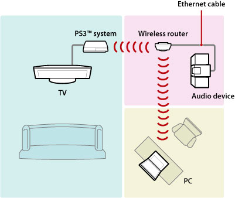
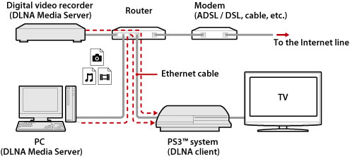
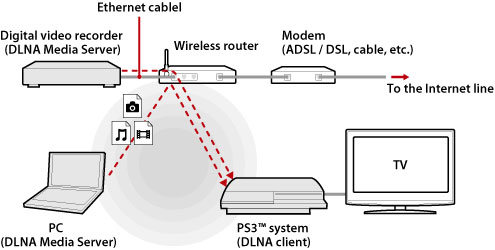
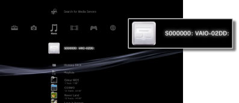
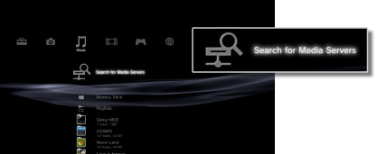

Settings > Network Settings > Media Server Connection
Media Server Connection
Adjust settings for the connection to devices that support DLNA.
| Enable | Enable connection to devices that support DLNA. |
|---|---|
| Disable | Disable connection to devices that support DLNA. |
About DLNA
DLNA (Digital Living Network Alliance) is a standard that enables digital devices such as personal computers, digital video recorders, and TVs to be connected on a network and to share data that is on other connected, DLNA-compatible devices.
DLNA-compatible devices serve two different functions. "Servers" distribute media such as image, music, or video files, and "clients" receive and play the media. Some devices perform both functions. Using a PS3™ system as a client, you can display images, or play music or video files that are stored on a device with DLNA Media Server functionality over a network.

Connecting the PS3™ system and DLNA Media Server
Connect the PS3™ system and DLNA Media Server using a wired or wireless connection.
Example when connecting to a personal computer using a wired connection

Example when connecting to a personal computer using a wireless connection

Setting up a DLNA Media Server
Set up the DLNA Media Server so that it can be used by the PS3™ system. The following devices can be used as DLNA Media Servers.
- Devices that support the DLNA standard, including products of companies other than Sony
- Personal computers (PCs) with Windows Media Player 11 installed
When using an AV device as a DLNA Media Server
Enable the DLNA Media Server function of the connected device to make its content available for shared access. The setup method varies depending on the connected device. For details, refer to the instructions supplied with the device.
When using a Microsoft Windows personal computer as a DLNA Media Server
A Microsoft Windows personal computer can be used as a DLNA Media Server by using Windows Media Player 11 functions.
1. |
Start Windows Media Player 11. |
|---|---|
2. |
Select [Media Sharing] from the [Library] menu. |
3. |
Check [Share media]. |
4. |
From the list of devices under the [Share media] checkbox, select the devices that you want to share data with, and then select [Allow]. |
5. |
Select [OK]. |
Hints
- Windows Media Player 11 is not installed by default on a Microsoft Windows personal computer. Download the installer from the Microsoft Web site to install Windows Media Player 11.
- For details about how to use Windows Media Player 11, refer to the Windows Media Player 11 Help feature.
- In some cases, original DLNA Media Server software may be installed on the personal computer. For details, refer to the instructions supplied with the computer.
Playing DLNA Media Server content
When you turn on the PS3™ system, DLNA Media Servers on the same network are automatically detected and icons for the detected servers are displayed under  (Photo),
(Photo),  (Music), and
(Music), and  (Video).
(Video).
1. |
Select the icon of the DLNA Media Server that you want to connect to under  |
|---|---|
2. |
Select the file that you want to play. |
Hints
- The PS3™ system must be connected to a network. For details on network settings, see
 (Settings) >
(Settings) >  (Network Settings) > [Internet Connection Settings] in this guide.
(Network Settings) > [Internet Connection Settings] in this guide. - When the method of allocating IP addresses has been changed from AutoIP to DHCP under the settings for the network environment, perform another search for servers under
 (Search for Media Servers).
(Search for Media Servers). - The DLNA Media Server icon is only displayed when [Media Server Connection] is enabled under (Settings) > (Network Settings).
- The folder names that are displayed vary depending on the DLNA Media Server.
- Depending on the DLNA Media Server, some files may not be playable or operations that can be performed during playback may be restricted.
- You cannot play copyright-protected content.
- File names for data that is stored on servers that are not compliant with DLNA may have an asterisk appended to the file name. In some cases, these files cannot be played on the PS3™ system. Also, even if the files can be played on the PS3™ system, it might not be possible to play the files on other devices.
- You may be required to connect the system (CECH-4200 series or later) using an HDMI cable to play video content.
Searching for DLNA Media Servers manually
You can initiate a search for DLNA Media Servers on the same network. Use this feature if no DLNA Media Server is detected when the PS3™ system is turned on.
Select (Search for Media Servers) under (Photo), (Music) or (Video). When the search results are displayed and you return to the XMB™ menu, a list of DLNA Media Servers that can be connected will be displayed.

Hint
(Search for Media Servers) is only displayed when [Media Server Connection] is enabled in (Network Settings) under (Settings).